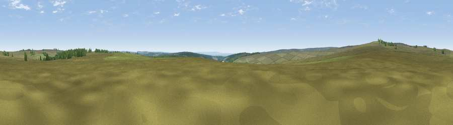

Viewpoint near Rosedale Abbey
#29808 in England · top 67% of its area beats it · near Rosedale Abbey · open accessWhere it is
The exact computed spot (SE 75325 98775). Click the marker for map links.
Public access: this spot lies on mapped open-access land (CRoW Act 2000) — you may roam here on foot. Computed from Natural England's CRoW access layer and OpenStreetMap rights of way — not the legal definitive map. Always verify locally.
The view, rendered

A 360° render of this exact spot computed from the terrain model, tree cover and land cover — summer colours, afternoon light, calibrated against photographs of famous viewpoints. Real trees, hedges and buildings will differ in detail.
The panorama
Grey silhouette: terrain skyline in each direction (720 bearings, Earth curvature and refraction included). Dashed green: skyline with trees (+15 m) and buildings (+8 m) as obstacles. Blue strip: how far the ground is visible on each bearing.
Where the view opens
Wedge length = distance to the farthest visible ground on that bearing (vegetation-aware). Rings at 10, 25 and 50 km.
What fills the view
91% grassland · 7% woodland · 2% cropland
Angular shares of the visible panorama (visual magnitude), not map area. Landscape diversity 0.15 (0–1 Shannon).
Key numbers
More beautiful places nearby
The staircase of upgrades: each row has a higher view potential than everything closer. Driving times are estimates from straight-line distance, calibrated against real road routing — check an actual route before setting out.
| Place | Direction | Drive | Score |
|---|---|---|---|
| Viewpoint near Rosedale Abbey | E · 1 km | ~3 min | 42.9 |
| Viewpoint near Rosedale Abbey | WNW · 2 km | ~5 min | 61.3 |
| Peat Hill | NW · 4 km | ~9 min | 72.5 |
| Danby Beacon | N · 11 km | ~20 min | 73.4 |
| Viewpoint near Eskdaleside | ENE · 12 km | ~22 min | 78.4 |
| Viewpoint near Eskdaleside | NE · 12 km | ~22 min | 80.7 |
| Viewpoint near Lythe | NNE · 18 km | ~31 min | 81.3 |
| White Hill | WNW · 19 km | ~33 min | 84.2 |
54.37891, -0.84183 · source: screening · position refined by local search. Computed location — check access rights before visiting.